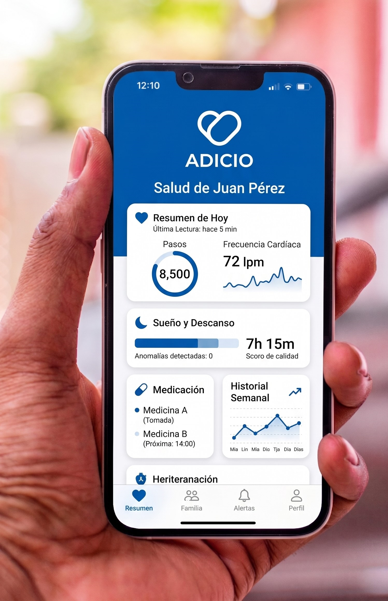
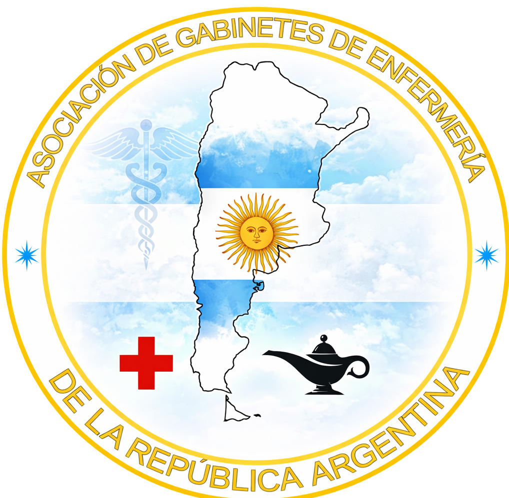

Smartwatches y sensores de caída avanzados.
Gestión de turnos y recordatorio de medicación.
Modificamos el hogar para máxima seguridad.
Seguimiento en tiempo real para la familia.
No reemplazamos su cobertura médica, la potenciamos. ADICIO se encarga de la logística diaria, el monitoreo constante y el bienestar emocional, permitiendo que la familia recupere la tranquilidad.
Incluimos en todos nuestros planes un ecosistema de dispositivos inteligentes para un monitoreo preciso y preventivo, integrados directamente con nuestra App.
Monitoreo de pulso y detección de caídas.
Control digital de presión arterial WiFi.
Nivel de oxígeno en sangre en tiempo real.
Medición infrarroja rápida y precisa.
Control de peso y composición corporal.
Soluciones escalables que se adaptan a las necesidades cambiantes de cada adulto mayor.
Ideal para adultos independientes que buscan seguridad adicional.
Monitoreo activo y asistencia técnica presencial periódica.
Cuidado integral 360° con acompañamiento personalizado.
Nuestros asesores especialistas pueden realizar una evaluación gratuita para recomendarte la mejor opción para tu familia.
Adicio nació como respuesta a una necesidad. Un modelo interdisciplinario de seguimiento y acompañamiento en salud, diseñado desde la experiencia directa, con foco en la claridad, la organización y la continuidad del cuidado.
Nuestro equipo está integrado por profesionales de enfermería, del derecho sanitario y de la gestión administrativa.
Personal capacitado en patologías complejas y soporte vital básico.
Conocenos

Comparamos nuestra propuesta integral frente a modelos tradicionales.
| Característica | Cuidado Tradicional | Modelo ADICIO |
|---|---|---|
| Monitoreo | Solo presencia humana | Digital 24/7 + Alertas Real-time |
| Transparencia | Informes verbales | Acceso App con historial médico |
| Costos Indirectos | Altos (Gestión familiar) | Bajos (Delegación completa) |
| Seguridad Hogar | No contemplada | Auditoría y adaptaciones físicas |

Nuestra App conecta a la familia con el equipo médico. Consulta reportes de actividad, estadísticas de evolución a lo largo del tiempo, signos vitales y el cronograma de medicación en tiempo real. Respetamos la privacidad del adulto mayor, monitoreando solo lo esencial para su seguridad.
Acceso encriptado y selectivo.
Aviso inmediato ante irregularidades.

Artículos diseñados para brindar tranquilidad, herramientas prácticas y apoyo emocional a quienes cuidan de sus seres queridos.
Explorar Blog FamiliasÚltimas tendencias en gerontología, protocolos de enfermería y tecnología aplicada al cuidado de la salud.
Explorar Blog ProfesionalesEstamos disponibles para brindarte la atención personalizada que tu familia merece.
Expandimos nuestro compromiso de cuidado inteligente en áreas estratégicas para garantizar respuestas rápidas y visitas presenciales efectivas.
Atención en todos los barrios de la Ciudad Autónoma.
Vicente López, San Isidro, Tigre, Pilar y Escobar.
Cobertura especial estacional y fija en puntos clave.
Entendemos que el cuidado de un ser querido es una decisión importante.
Aquí respondemos las
dudas más habituales sobre nuestro servicio.
Utilizamos dispositivos no invasivos (como smartwatches) que registran signos vitales y actividad en tiempo real. Esta información se envía directamente a la App familiar. Todo esto lo hacemos sin utilizar cámaras, preservando en un 100% la intimidad y dignidad del adulto mayor.
ADICIO no es un reemplazo de su obra social, prepaga o médico de cabecera, sino un complemento proactivo. Nos enfocamos en la prevención y asistencia diaria.
Nuestros planes son de contratación privada. Sin embargo, nuestro equipo se encarga de gestionar toda la logística administrativa con su obra social: solicitud de turnos, autorizaciones de recetas médicas y retiro de medicamentos en farmacia, ahorrándole todo ese tiempo a la familia.